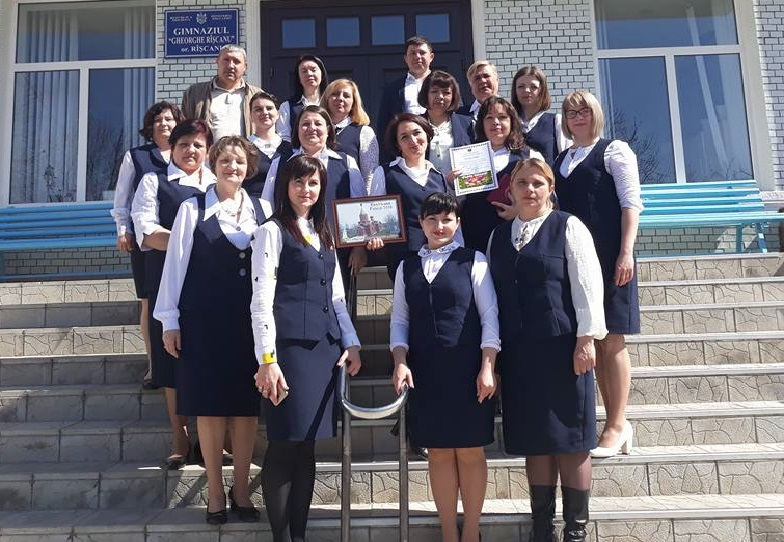
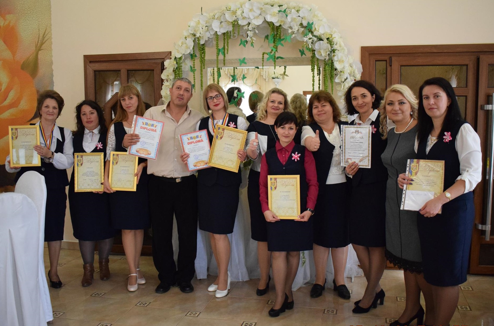
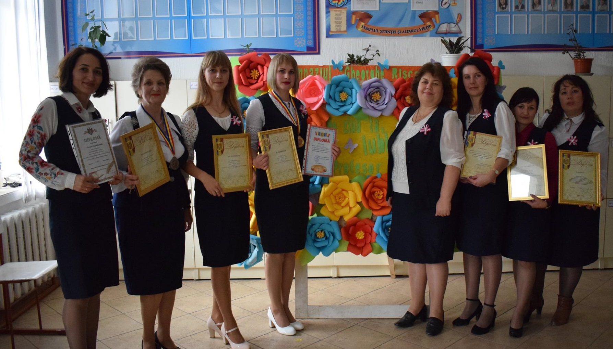

Noutăți
Modificări în orar
12.05.2022 Modificări în orar valabile începând cu data de 16 mai 2022. Orarul nou îl găsiți pe pagina Orar.
Testarea Națională clasa IV-a
10.05.2022 Orarul Testării Naționale în Învățământul Primar pentru anul de studii 2021-2022:
Matematica - 12 mai (joi)
Limba și literatura română - 17 mai (marți)
Examene clasa IX-a
02.05.2022 Orarul Examenelor Naționale de Absolvire a Gimnaziului pentru anul de studii 2021-2022:
Matematica - 6 iunie (luni)
Limba și literatura română - 9 iunie (joi)
Istoria românilor și universală - 13 iunie (luni)